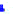
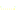

Sekuraj retmesaĝoj kun RSA
matma6
- Mikaelo (aŭ Michał) Gabor
- 25 jara informatikisto el Vroclavo
- Instruisto, teknikaj liceoj en Vroclavo:
- Elektroniczne Zakłady Naukowe - Elektronika Faklernejo
- Centrum Kształcenia Praktycznego - Centro de Praktika Edukado
- servilaj operaciumoj
- webaplikaĵoj kreado
- matma6 (ĉe) matma6 (punkto) net
Ŝatokupoj, vidpunktoj, ...
- Zelda
- Fervojoj
- Mia eta poneo: Amikeco estas magio
- Lingvoj kaj lingvoscienco
- Esperanto (naturale)
- Rumanio kaj Moldavo
- Koreo
- Kuboj de Rubik
- Racia egoismo
- Ateismo
- Libertarianismo
- Ekzistas absoluta vero
- Skeptikismo
- Imperialismaj mezuroj
Zelda klubo
Nia ekzemplo: Zelda Klubo
Eva volas rompi ion
Matematiko malantaŭ ĉifroj
Kial tio funkcias?
Estu sekura en interreto
Alico volas labori en kafejo...
Sekuraj retmesaĝoj kun RSA
Boriso uzas RSA por retmesaĝi kaj retumi
Sekurigu vian servilon
Alico devas sekurigi servilon

Danĝeroj
Alico laboras en kafejo kaj agordas servilon.
Eva povas ekzemple
- uzi komputilon de Alico, kiam ŝi estas en necesejo
- legi durdiskon
- ŝteli komputilon
- subaŭskulti reton
- ŝanĝi datumtrafikon
- kaj la plej danĝera... kotopo!
Alice devas defendi sin!
Bazaj konceptoj
- Oni povas sekurigi komputilon tiel, ke oni ne povas uzi tian maŝinon. Sed oni devas esti sekura sen sekurigi tro.
- Ekzemple vi povas sekurigi komputilon: malkonekti ĉiajn retojn, meti en monŝrankon kaj ne uzi tion plu.
- La plej granda danĝero estas uzanto.
- Vi povas pensi pri sekureco tra tavoloj. Kiam unu tavolo estas breĉita, sekva devas haltigi atakon.
- Estu paranojeta, tio helpas. Se io sonas tro bone por esti vera, vi verŝajne veras.
- Ĉiuj sistemeroj devas esti atingeblaj nur por necesaj aferoj.
Fizika elarilo
Oni povus uzi komputilon
Oni povus dismunti durdiskon kaj legi/kopii/ŝanĝi
Solvo: ĉifrado de tuta komputilo kun ŝlosado
VPN - virtuala privata reto
Reto povas sendi datumojn. Reto povas sendi retan trafikon.
Tio povas esti ĉifrita
Oni ankaŭ povas atingi privatan reton
Malbonaj pasvortoj
- Ludoviko
- Z4m3nh0f
- Esperatno0807
- mi volas mondan pacon
Bonaj pasvortoj
-
Diceware (dajsvaro), ni ĵetas ludkubojn kaj...
- 3e7Mlkmd1t - Esperanto Estas Tre Mojosa Lingvo Kaj Mi Devas Lerni Tion
- KdFByDDpmUr3bzmSFQj5EsDQ - tute loteca
Naturale nun tiaj pasvortoj estas rompitaj - ĉiuj scias tiojn!
La plej granda danĝero - uzanto
- Oni povas klaki ie
- Oni povas elŝuti ion
- Iu povas diri necesan informacion, bone demandita
- ...
/